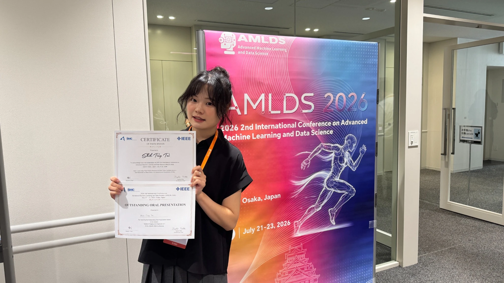

My research background centers on medical imaging, clinical AI, and evidence-driven validation. I use research as technical grounding for the product and analytics work I do today.

Lesion-wise brain tumor AI
False-positive reduction and five-class lesion typing in multi-sequence MRI.

Mask-gated false-positive reduction
Technical evaluation of lesion-wise candidate verification in multi-modal MRI.

Outstanding Oral Presentation
Medical Imaging and Diagnostic AI session · Osaka, Japan.
Selected publications & presentations
2026
MIDL
A Lesion-Wise Cascade for False-Positive Reduction and Lesion-Level Brain Tumor Typing in Multi-Sequence MRI
2026
IEEE AMLDS
Lesion-Wise False-Positive Reduction for Brain Tumor Candidate Masks in Multi-Modal MRI via Mask-Gated 2.5D Spatiotemporal Classification
2024
TSBME
Simultaneous Brain Tumor Segmentation and Classification in 3D MRI with a Multi-Task UNet
FocusLesion-wise medical AI · clinical validation · imaging workflow translation
Additional recognitionOutstanding Thesis Award · NYCU